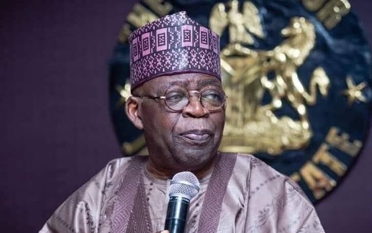

Tinubu hails EFCC after FBI praises role in sextortion arrests

President Bola Tinubu has praised the Economic and Financial Crimes Commission (EFCC) for helping secure the extradition of two Nigerians accused of sexually exploiting and extorting teenage boys in the United States. His commendation followed a letter from FBI Director Kash Patel to EFCC Chairman Ola Olukoyede thanking the commission for its assistance in the investigation, known as Operation Artemis.
The EFCC said its Lagos Zonal Directorate 2 facilitated the extraditions in August after separate FBI investigations. The schemes allegedly targeted boys, particularly those aged 13 to 17, using intimate photographs to threaten victims and demand money through transfers, gift cards and cryptocurrency. The FBI linked the cases to two American teenagers who died by suicide after online sexual exploitation and extortion.
In one case, a 13-year-old boy was allegedly approached on Instagram and invited to exchange nude photographs. The person then threatened to send the images to the boy’s contacts unless he paid. The EFCC said the threats reportedly continued after the boy indicated he intended to take his own life. The FBI identified people allegedly involved and asked the EFCC to investigate them for possible prosecution under Nigerian law.
The EFCC said the FBI sought Mudasiru Afeez Olawale’s extradition on a seven-count indictment, including charges related to the sexual exploitation of a minor resulting in death, threats and distribution of child sexual abuse material. A Federal High Court judge rejected the extradition application in June 2024, but the Attorney-General of the Federation appealed. The Court of Appeal in Lagos later set aside that ruling. Olawale was extradited in August and appeared before a federal court in Greensboro, North Carolina, the following day. The US Department of Justice said he is presumed innocent unless proven guilty beyond a reasonable doubt. Adebola Festus Adekunle was also extradited in connection with a separate investigation.
Tinubu said his administration would support law enforcement agencies pursuing offenders regardless of where crimes were committed, and urged the EFCC to continue its work. He also cited Nigeria’s removal from the Financial Action Task Force grey list in October 2025 and the European Union’s high-risk list in January as signs of progress in strengthening financial systems and international confidence.
Source: Premium Times